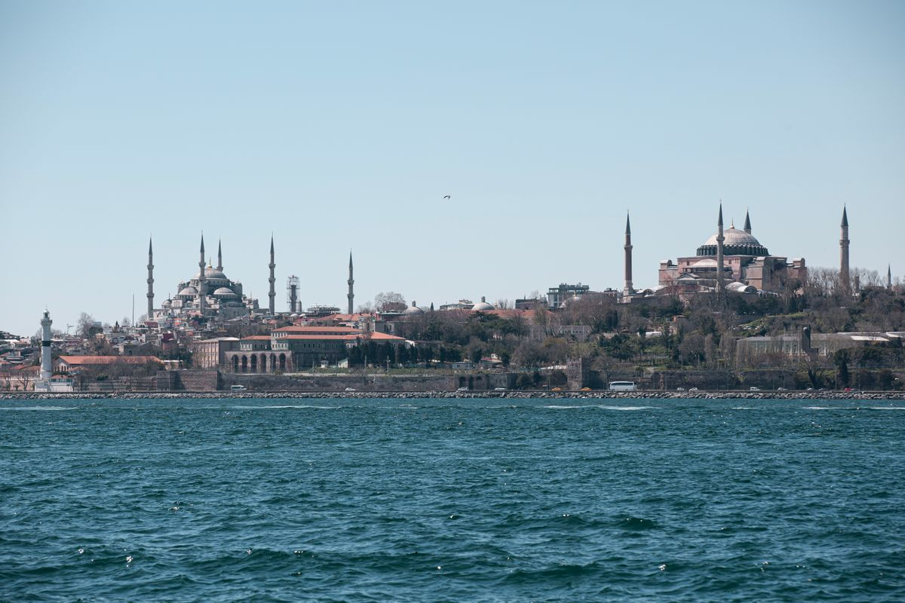

Country Guides
Country GuidesThe study in Turkey for Pakistani students story is one of the great under-reported opportunities in the whole study-abroad landscape, and it deserves far more of your attention than the coaching-centre industry gives it. Turkey is close enough that a flight from Karachi or Lahore lands in Istanbul in hours, culturally familiar enough that a Pakistani student settles in without the disorientation of North America, genuinely affordable on every metric — tuition, living, and even parts of the visa system — and home to a growing number of English-taught programmes at institutions that place well globally. Yet most Pakistani families, when they think of Turkey at all, think of holidays in Istanbul or the Turkiye Burslari scholarship, and never connect the two into the practical, budget-friendly study route this guide maps out.
This guide is written for 2026 applicants in Pakistan, and it covers the complete route. You will learn what the Turkey student visa from Pakistan process actually involves, the real Turkey student visa requirements, a realistic Turkey student visa processing time, the cost of tuition and living you should plan for, how the famous Turkiye Burslari scholarship fits into the picture, and how the residence permit (ikamet) system works after you land. By the end you will be able to explain the whole process to a family member in plain Urdu, and you will have a clear, dated, budgeted plan rather than a collection of rumours.

Why Turkish universities are a genuine top-five option in 2026
Put Turkey in the honest ranking alongside the destinations this site covers most — Canada, Germany, the UK, Australia, Malaysia — and it occupies a very particular, very attractive niche. Turkey is not trying to be the prestige player that the US or the UK is, but for a large share of Pakistani applicants it is objectively the best ratio of outcome to cost and effort. The reasons stack cleanly.
First, proximity and cultural fit. A Pakistani student can be in Istanbul or Ankara in a few hours with a modest flight budget, the time difference is small or non-existent, halal food and familiar social rhythms are everywhere, and the large Pakistani community means a student is never truly alone. For families anxious about a child going far, Turkey is the destination that feels simultaneously foreign and comfortable. Second, cost: Turkish tuition runs from roughly USD 1,000 to 6,000 per year depending on public or foundation university and programme, and living costs are among the lowest in the region — the budget section below puts real monthly numbers on it. Third, English-medium breadth: Turkish universities, led by the large public institutions and the top foundation universities, offer a genuinely wide stock of English-taught programmes in engineering, medicine, computing, business, and the social sciences, and many accept a medium-of-instruction letter rather than demanding a fresh test, as the no-IELTS guide on this site documents. And fourth, the scholarship route: Turkiye Burslari is one of the most generous and most famous government scholarship programmes in the world, and it is genuinely reachable for Pakistani students who prepare properly, as the Turkiye Burslari guide explains in full.
There is a fifth reason that deserves its own sentence: Turkey has scale. Roughly tens of thousands of international students already study there, with a substantial Pakistani cohort, so the systems — the visa, the residence permit, the university international offices — are all exercised daily and are correspondingly less prone to the unpredictable surprises of an under-used route. The infrastructure for an international student in Turkey works, and that reliability is worth more than a flashy ranking.
The Turkey student visa from Pakistan: separating the easy from the exacting
Let us be precise about what the Turkey student visa from Pakistan actually is, because the word "visa" hides two separate things and the confusion costs applicants time and money. For study programmes longer than 90 days — which is every degree — a Pakistani applicant needs the Turkish *student residence permit* pathway, but you cannot obtain that from Pakistan directly. You obtain a short-term visa for entry, or in practice a student visa, apply through the Turkish authorities, and then convert to the residence permit (ikamet) after arrival. The official flow, in the order the system actually runs, is: (1) secure admission to a Turkish university, (2) obtain the student acceptance and, where required, the university's support, (3) apply for the Turkish student visa through the visa application process for Pakistan, (4) travel to Turkey, and (5) within the mandated window, apply for the student residence permit at the local immigration (Göç İdaresi) office.
The clarifying headline: the Turkey student visa from Pakistan is best understood as the entry and the opening chapter, while the residence permit is the document that governs your entire stay. Almost every Pakistani applicant who "has a Turkish visa" is really holding the entry visa that will shortly be replaced by the ikamet. This guide therefore treats the visa and the residence permit as one continuous, well-ordered process, and the arrival section below gives the ikamet deadline the importance it deserves, because missing it is the most common way a study in Turkey plan silently collapses.
For the practical entry: Pakistani applicants apply for the Turkish student visa through the Turkish visa application centre in Pakistan (the official Turkish Embassy in Islamabad sits behind the whole process). You will generally book an appointment, attend with your documents and biometric data, pay the fee, and wait for processing. The good news for most degrees is that the Turkish student visa genuinely is among the more attainable routes for a prepared Pakistani applicant — the system is not the gated, ranked, lottery-driven machine that some English-speaking destinations have become, and the refusal-reasons guide on this site helps you avoid the few genuine risk points that do exist. For the many families who ask "is a Turkey student visa from Pakistan realistic?", the honest answer is yes, with the same discipline every other country demands — the Turkish system simply runs on completeness rather than competition.
The Turkey student visa requirements, item by item
The formal Turkey student visa requirements for a Pakistani applicant in 2026 are a manageable, comprehensible list — a fact worth stating plainly because most coach-led announcements rattle off a terrifying wall of "documents". Read them as twelve mechanical items and they lose most of their fear.
- Valid passport — valid for at least six months beyond your intended stay, with blank pages. Renew early, because mid-process renewal changes your identity references across every other document.
- Completed visa application form — the standard Turkish visa form, filled accurately and matching your passport exactly.
- Recent photographs — meeting the Turkish visa photo specifications (typically white background, specific dimensions, recent).
- University acceptance letter — your admission from a Turkish university, ideally specifying the programme and the dates.
- Proof of funds — bank statements or a sponsorship declaration showing you can support yourself for the first year, roughly USD 5,000 to 8,000 is a practical planning figure for most files.
- Accommodation proof — evidence of where you will stay, whether a university dormitory confirmation, a rental agreement, or a declaration of a sponsor in Turkey.
- Travel and health arrangements — a return-ticket itinerary, and a health or travel insurance policy valid in Turkey for the early period of your stay.
- Academic documents — your degree and transcripts, translated and attested; the level of attestation/equivalency (denklik for some regulated fields) varies by programme.
- Letter of intent / study plan — explaining why you chose Turkey and your course; stronger for master's and PhD files.
- Any programme-specific requirements — for medicine, dentistry, or other regulated courses, the relevant exam results and approvals.
- Passport copies and photos — as requested by the appointment checklist.
- The visa fee — paid at appointment; the amount is set by the consulate and should be confirmed on the official page at the time of application.
The honest reading of these Turkey student visa requirements: none of them is exotic, and a file assembled with the same discipline this site demands for every country — real funds, real accommodation, matching names, dated documents — will look strong at the Turkish window. What the Turkish system is genuinely strict about is completeness and consistency; a name mismatch, a stale fee, or an accommodation proof that reads as fabricated will stop a file just as hard as in any system.
Three further Turkey student visa requirements deserve emphasis because Pakistani applicants trip on them specifically. The first is the identity rule: every document — passport name, university admission, bank letter, accommodation proof — must match one spelling exactly, because the Turkish officer runs a name consistency check and a single variation triggers a query. The second is the currency rule: fee and funds figures should be quoted in the current published amounts, and a file that quotes last year's fee or a stale exchange rate reads as unprepared. The third is the source-of-funds rule, which the proof-of-funds guide covers in depth: the officer wants to re-derive your balance from your income, so the sponsor letter must match the bank statement exactly. Meet those three and the Turkey student visa requirements stop being a wall of documents and become a checklist you have already passed.
The single official source for the live requirements is the Turkish Ministry/consulate visa portal and the Turkish Embassy in Islamabad, and you should confirm amounts and the exact checklist there the week you apply. The visa fee and occasionally the document list change, and any agent quoting you a fixed "visa package price" without referencing the consulate's current published amount is selling you air. A final word on the Turkey student visa requirements: print the official checklist the consulate publishes, tick each line against your assembled file, and keep that checked page in your folder the day you attend the appointment — because the officer's own job is to compare your stack against that published list, and a file that visibly matches it removes the entire job of doubt.
How long the Turkey student visa processing time really takes
Planning needs a number, and the honest Turkey student visa processing time for Pakistani applicants in 2026 generally runs approximately three to eight weeks from the completed application and biometrics, though it can stretch in peak season. The Turkish system, like most, publishes guidance and the real wait is driven by seasonal volume and by whether your file requires any additional request. The safe planning rule that protects your intake: assume up to eight weeks, apply the moment your university letter is in hand, and never book flights or pay non-refundable deposits against a "guaranteed two-week" number invented by an agent.
Two factors quietly move the real Turkey student visa processing time for Pakistani files. First, completeness again: a file that arrives with true funds evidence, matching documents, and real accommodation is processed on the first pass; a file missing a stamp or carrying a document the office must query spends extra weeks in a round-trip. Second, the season: files filed near the autumn intake peak sit behind a larger queue, while files lodged early in the calendar move faster. Both point to the same strategy — early, complete, verified — that this guide repeats at every step, and both explain why the applicants who follow it hit their semester while the disorganised majority watch deadlines pass.
Plan the whole intake around the Turkey student visa processing time as an input, not an afterthought. If you need to be in Turkey by early October for the autumn semester, work backwards from a completion by mid-August at the latest, which implies the appointment itself should happen by mid-June in a reasonable season. The families who build that reverse calendar and stick to it are the ones who never face the question "can I re-book my flight again", while the families who treat the Turkey student visa processing time as a fixed, favourable rumour are the ones who discover, in panic, that the queue peak moved their file by six weeks.
Tuition, living costs, and the full budget for studying in Turkey
Now the numbers that move family conversations, and they are genuinely friendly. Turkey's cost profile is a large part of why the destination is so appealing, so this section sets out the honest figures a Pakistani family should hold in one hand. The full cross-country budget comparison, including how Turkey stacks against Germany, Malaysia, and the UK, lives in the study-abroad cost and budget guide.
| Cost item | Typical figure for a Pakistani student | Notes |
|---|---|---|
| Tuition — public universities | USD 1,000 – 4,000 / year | Varies by programme; medicine and engineering sit higher |
| Tuition — foundation (private) universities | USD 4,000 – 12,000 / year | Scholarship-heavy; often includes partial or full waivers |
| Living cost — most cities | USD 400 – 700 / month | Rent, food, transport; Istanbul runs higher, Anatolian cities lower |
| Accommodation share | USD 150 – 350 / month | University dormitory or shared flat; the largest recurring bill |
| Health insurance (student) | moderate annual figure | Required; cost depends on your policy |
| Visa + residence permit fees | moderate, set by the state | Current amounts confirmed at application time |
| Flight + first-year setup | moderate to high | Short flight, so lower than long-haul destinations |
Adding the columns, a realistic first-year budget for a public-university student in a mid-size Turkish city lands near USD 6,000 to 12,000 including tuition, living, and setup — a figure that undercuts Canada, the UK, and Australia by a wide margin and that makes Turkey genuinely competitive even with Malaysia. A foundation-university student sees tuition rise but frequently offsets it with a scholarship, which is why the scholarship section below deserves serious attention from every applicant.
There are two financial rules to hold. First, the embassy wants your funds evidence to cover the first year — plan for around USD 5,000 to 8,000 in provable, consistent balances, built the way the proof-of-funds guide describes, not a sudden injected lump. Second, do not confuse "affordable country" with "no funds evidence"; the Turkish officer still verifies you can pay, and a weak money file is one of the genuine risk points on the refusal list. Cheap to live in is an opportunity; proving you can afford it is still mandatory.
Cost of studying in Turkey for Pakistani students: every line explained
The affordability claim deserves to be nailed down line by line, because a budget a family can read is worth more than a vague "Turkey is cheap". Putting a precise shape on the cost of studying in Turkey for Pakistani students is the single most useful thing any guide can do, and this section builds the real monthly and yearly picture rather than a slogan.
Start with tuition. The cost of studying in Turkey for Pakistani students at a public university sits in the USD 1,000 to 4,000 per year band for most programmes, with medicine and dentistry near the top of that range and the social sciences and humanities near the bottom. At foundation universities the sticker price rises to USD 4,000 to 12,000, but the effective number falls sharply once a scholarship or a fee waiver applies, which is common. The honest way a Pakistani family should read the cost of studying in Turkey for Pakistani students is therefore as a range with a big scholarship-negotiated discount available at the foundation end.
Then add living costs, where Turkey genuinely shines. Rent for a room or a university-dormitory bed runs roughly USD 150 to 350 per month depending on the city and the standard; food, transport, phone, and daily spending add another USD 250 to 400; so a realistic monthly living figure for a mid-size city lands around USD 400 to 700, with Istanbul at the top of that band and Anatolian cities comfortably below. Adding tuition, twelve months of living, health insurance, and the visa-and-setup overhead, the cost of studying in Turkey for Pakistani students for a first public-university year lands near USD 6,000 to 12,000 — a figure this site's cost and budget guide confirms is among the best value on any continent, rivalling Malaysia and undercutting the UK, Canada, and Australia by a multiple.
Two cost realities deserve emphasis because families trip on them. First, the exchange-rate play: Turkey's currency has moved significantly against the dollar in recent years, which means costs in dollars shift; the planning discipline is to hold a cushion and re-quote prices on the official figure at the time of payment rather than trusting last year's guide. Second, the visa and permit fees, the flight (short, so modest), and the first-month setup (deposits, bedding, phone) are real but small next to the annual tuition-and-living line; include a buffer for them so the plan never runs dry in month two. The proof-of-funds guide shows how to document the whole thing in a way the officer reads as credible.
For a Pakistani family weighing destinations, the cost of studying in Turkey for Pakistani students is the argument that often closes the debate. It is close enough to visit or return cheaply, cheap enough that a middle-class family can genuinely fund a year, and — where the scholarship lands — affordable to the point that the word "free" becomes honest. That combination is rare, and it is precisely why this guide argues Turkey belongs on the shortlist of every Pakistani applicant who is not chasing a specific North American or UK brand. Read the cost of studying in Turkey for Pakistani students one final time against the default assumption most families carry — that a "real foreign degree" necessarily costs lakhs — and the case answers itself: the honest number for Turkey sits far below the figure most families would have accepted without a guide.
A city-by-city reality check for Pakistani students
Where you study in Turkey changes both the cost and the experience, and an honest guide gives a quick map. Istanbul is the powerhouse: the biggest international-student population, the widest English-taught choice, the strongest commuting and business links, and the highest living costs and the most competitive quarters. Ankara, the capital, hosts the great public universities — METU, Bilkent, Hacettepe, the University of Ankara — with a calmer, more academic rhythm and lower living costs than Istanbul. Izmir sits on the Aegean with Ege University and a pleasant, coastal, student-friendly pace. And the Anatolian university cities — Bursa, Konya, Kayseri, Eskişehir, Antalya, and the rest — offer the lowest costs and the most immersive Turkish experience, particularly attractive for students in Turkish-medium programmes with a preparatory year. For a Pakistani student the pairing is clear: pick Istanbul for breadth and prestige, Ankara for the big public research universities, or an Anatolian city for cost and immersion, and match that choice to the budget and the programme goals this guide has already laid out.
Part-time work while studying
International students in Turkey can work part-time under defined conditions while they study, and the practical rules are set out alongside the other destinations in the part-time jobs guide. For a Pakistani student, the realistic reading is that part-time work helps cover weekly spending and provides experience and Turkish language practice, but it should not fund your visa case — the embassy wants independent support on paper. The presence of a legitimate part-time option is a planning bonus, not a visa lever.
The universities that matter for a Pakistani applicant in 2026
Names shorten the whole decision, so this section lists the institutions that realistically come up for Pakistani applicants, grouped by the two families that dominate Turkish higher education. The first family is the large public universities — the ones with the most English-taught seats and the most affordable tuition. The second is the foundation (private) universities, which charge higher tuition but often counter it with scholarships and modern facilities, and which sit heavily in the international-student market.
On the public side, the institutions Pakistani applicants most often engage are Istanbul University, Istanbul Technical University (ITU), Boğaziçi University, Ankara University, Middle East Technical University (METU) in Ankara, Hacettepe University, Ege University in Izmir, and the growing number of technical universities across Anatolia. These run substantial English-taught engineering, science, business, and social-science programmes, they carry the Turkish state's backing and reputation, and their tuition, while no longer free for international students, remains far below the English-speaking world. On the foundation side, the names Pakistani applicants encounter repeatedly are Koç, Sabancı, Bilkent, TOBB-ETU, Başkent, Medipol, Istanbul Aydın, and the many universities in the big medical and engineering groups — these invest heavily in campus and scholarship infrastructure, and their international admissions offices are accustomed to Pakistani applicants and process files efficiently.
The strategic reading of these two families is the same one this guide applies to every destination: match the university to your objective and your budget, rather than to a single ranking number. A Pakistani applicant whose priority is the cheapest credible degree and the strongest scholarship odds looks hard at the public universities and at Turkiye Burslari. An applicant whose priority is reputation, modern facilities, and a strong international classroom looks at the foundation universities, funding them through their own scholarship lines where possible. The how-to-find-scholarships guide and the Turkiye Burslari guide walk through exactly how to build that two-family shortlist and fund it.
For medicine specifically — a very common Pakistani ambition — Turkish medical faculties at the major public and foundation universities accept international students through defined quotas and, in the English-medium programmes, reasonable academic thresholds, though admission is competitive and the tuition at foundation medical schools is the highest line on any Turkish budget. Dentistry, pharmacy, and veterinary programmes follow the same pattern. Engineering and computer science, by contrast, sit among the most accessible English-taught options for Pakistani applicants, with real admission odds and moderate tuition, which is where the majority of well-planned study in Turkey for Pakistani students applications actually land.
Turkey student visa without IELTS: how the English requirement really works
Because many Pakistani applicants arrive at the Turkish question precisely because the English-speaking destinations are gated by tests, this section addresses the language evidence directly. The honest position: a Turkey student visa without IELTS is genuinely achievable, because the deciding factor is the university's admission policy, not the embassy's language gate. Turkey does not run the kind of mandatory secure-test regime the UK or Canada attaches to some visa categories; the university decides whether your English suffices, and the embassy focuses its scrutiny on your funds, accommodation, and genuine-purpose story. For most Pakistani degree-seekers the practical consequences of trying for a Turkey student visa without IELTS are a shorter preparation timeline, a smaller budget, and a file that competes on academic record rather than test coaching.
For an English-medium Pakistani degree-holder, that means the Medium of Instruction certificate is the operative document, exactly as the dedicated study abroad without IELTS guide sets out across every country. Turkish universities that accept MOI evidence for their English-taught programmes will admit you without a fresh test, so pursuing a Turkey student visa without IELTS becomes a matter of choosing MOI-accepting programmes and confirming the policy on each programme page before you apply. The cautious reality is that some programmes and some years still ask for a score, especially for competitive foundation-university seats, so the disciplined applicant keeps a low-cost insurance test (a Duolingo or PTE) ready in parallel — the same hedge this guide's no-IELTS companion recommends — while their primary case rests on the MOI letter.
For applicants whose degree was not English-medium, the Turkey student visa without IELTS framing still has an answer, only a different one: many Turkish universities admit such students into a preparatory year before the degree, effectively converting the language gap into a paid extra semester rather than a refusal. This is the Turkish system's flexibility that the gated destinations lack, and it is a genuine advantage for a wider range of Pakistani profiles, even if it adds a year and a cost line to the plan. The key discipline, regardless of which door applies, is to ask the university directly, in writing, whether a Turkey student visa without IELTS file is acceptable for your specific programme — because a written confirmation from the international office converts "hopefully" into a documented fact of your file, and a Turkey student visa without IELTS claim backed by university correspondence is a claim an officer can verify rather than doubt.
One of the most attractive features of Turkish universities for Pakistani applicants who want to avoid a fresh language test is the breadth of English-medium programmes combined with a genuinely workable medium-of-instruction path. The English-taught engineering, computing, business, and social-science programmes at the top public institutions and foundation universities admit international students with English-medium-degree evidence — the Medium of Instruction certificate — in many cases, exactly as documented in the dedicated study abroad without IELTS guide on this site. For a Pakistani English-medium graduate, this means a Turkish university can be a genuinely no-IELTS destination, with the standard caveat that some programmes and some years still request a score and you should verify on the programme page before applying.
For applicants whose undergraduate instruction was Urdu-medium, the Turkish route remains open through a different door: many Turkish universities run a preparatory Turkish language year (hazirik) for Turkish-medium programmes, and a growing number accept international students who study a foundation in English or Turkish before the degree. The strategic point is that Turkey, unlike the gated English-speaking destinations, rarely closes the door entirely; it positions you through a preparatory year rather than a flat refusal. That flexibility is a real advantage for a wider range of Pakistani profiles than the destinations this site covers most.
Applying to Turkish universities: the mechanisms a Pakistani applicant must know
Understanding how Pakistani applicants actually get into Turkish universities removes a layer of confusion, because the application routes differ from the ones used for the English-speaking world. There are three principal mechanisms, and a well-planned Pakistani applicant usually engages more than one of them in parallel.
The first is the university's own international admissions. Most Turkish universities — public and foundation alike — run a direct international admissions process through their international office or their dedicated international student application portal. You create an account, choose your programme, upload your transcript, degree, and any language proof, pay a small application fee, and the university evaluates your file and issues a decision. This is the route that suits the majority of Pakistani applicants, because it is direct, transparent, and free of the layered agency fees that disguise fifteen different middlemen. The second mechanism is through the official national scholarship platform, Turkiye Burslari, which handles both the funding and a parallel admission to the scholarship-eligible universities; the Turkiye Burslari guide covers it in depth. And the third — relevant only to some foundation universities and to Turkish-medium programmes — is through an entrance or evaluation exam or a preparatory assessment that the university itself sets.
Two practical points protect a Pakistani applicant through every mechanism. First, verify the university's international admissions page is the genuine one and not a lookalike site operated by an unauthorised agent; the safest route is to start from the university's own official domain and follow it to its international admissions section. Second, keep every communication in writing, and collect the admission letter and the programme confirmation the same way you would for any country, because the embassy will want the verifiable chain. The pattern is identical to the documentation discipline every guide on this site teaches — and it is the discipline that reliably converts a Turkish offer into a visa.
Turkiye Burslari scholarship application, opened up
The Turkiye Burslari scholarship is the funding mechanism that most changes a Pakistani family's calculation, so it deserves a genuinely practical breakdown rather than a name-drop. The full guide on this site is your manual; this section distils the parts that matter most for a Pakistani applicant deciding whether the Turkiye Burslari scholarship is right for them.
First, what it covers: the Turkiye Burslari scholarship typically includes tuition at the assigned university, a monthly stipend, accommodation, and health insurance for the programme's duration. That is effectively a fully funded study route, and it is the reason the words "study in Turkey for free" are, for an unusually large share of applicants, genuinely true. Second, who it is for: the Turkiye Burslari scholarship is geared to full-time degree students across a wide range of fields, with defined age ceilings (they differ by degree level) and a strong emphasis on the applicant's academic record, motivation, and fit with the scholarship's priorities. Third, how the application works: through the official Turkiye Burslari portal, in its annual application window, where you submit your academic history, language evidence or intent, a statement, and your supporting documents, and where your profile is evaluated for both admission and funding together — a single application that, if successful, lands you both a place and a scholarship.
The honest warnings are as important as the promise. The Turkiye Burslari scholarship is one of the most competitive scholarship schemes in the world, drawing applicants from every country, and success depends on a strong GPA, a well-argued motivation, and smart field-and-university matching rather than luck. It is also important to understand that the Turkiye Burslari scholarship assigns you to a university from within its partner set rather than letting you name any institution freely, so you should be comfortable with the assigned placement. And because it is competitive, no self-respecting planner bets the whole plan on it; the strongest Pakistani applicants run the Turkiye Burslari scholarship application in parallel with direct fee-paying applications, so that whichever lands first, they are protected. The how-to-find-scholarships guide shows how to tune that two-track strategy to a specific profile.
After the visa: the residence permit (ikamet) and arriving the right way
The visa opens the door; the residence permit keeps the door open, and this is where many Pakistani study plans quietly fail if the arrival routine is skipped. Here is the sequence that protects your entire stay.
On or shortly after arrival, you must apply for the student residence permit (ikamet) at the local immigration office — the Göç İdaresi — within the mandated window (the guidance for students is to apply promptly, and in practice within the first period of your stay, not to delay). The application uses the social-security and document number flow, and you will provide your passport, admission, accommodation, passport photos, and fee. Once issued, the ikamet is the document that governs your presence, your re-entry, and your day-to-day validity as a student, so treat it as non-negotiable rather than an optional errand.
Alongside the ikamet, complete the small set of arrival tasks that make the stay run smoothly: register with your university as required, arrange your Turkish bank account once you have the permit, and, for many students, complete the local health insurance or social-security registration that the permit requires. Pakistani students who treat the ikamet as a priority, no matter how long the queue, never face the crisis that hits those who delay and suddenly discover their presence is not yet recorded. This is the arrival discipline that turns a study in Turkey plan from vulnerable to solid.
English or Turkish medium: choosing the right door into Turkish education
One decision shapes everything after arrival, and it is made before you apply: the language of instruction. Pakistani applicants arrive facing two coherent doors, and the honest planner picks between them deliberately rather than on rumour.
The English-medium door is the one most Pakistani applicants prefer, and for good reason. English-taught programmes in engineering, computing, business, and the social sciences carry no language barrier at entry beyond the MOI or test evidence, let you start studying from day one, and align with the global job market, all of which is why the no-IELTS guide lists Turkey among the genuinely doc-friendly destinations. The catch is that English-medium seats, especially at the top public and foundation universities, are the scarcer and more competitive ones, and they carry the full tuition line this guide has already set out.
The Turkish-medium door, by contrast, is the story most Pakistani families never hear. A large share of Turkish public universities teach in Turkish, and international students enter these programmes through a preparatory language year (hazırlık) that most universities run in-house before the degree begins. The Pakistan-relevant point is that the Turkish-medium route is often cheaper, carries more available seats, and leads to a genuinely functional level of Turkish — a real asset for living and working in the country — but it costs an extra year of preparation and demands serious effort in the language. For an applicant whose English-medium record is weak, or who targets the low-cost public universities at scale, the Turkish-medium door is not a consolation prize; it is a legitimate, lower-cost strategy with its own advantages.
The balanced recommendation for 2026: apply for your preferred English-medium programme as the primary track, and hold one Turkish-medium or hazırlık-based programme as a realistic second track if your budget or competitiveness is the constraint. That two-door approach is the Turkish mirror of the two-track scholarship strategy this guide describes for funding, and together they make the study in Turkey for Pakistani students plan unusually robust: whichever combination of language, cost, and funding you can actually win, there is a real door already open for you.
Will the officer approve my file? Reading the visa decision realistically
It helps to end the practical middle of this guide with a candid read of what an officer's approval actually depends on, because Pakistani applicants lose far more time to anxiety about the wrong factors than to the real ones. The Turkey student visa from Pakistan decision, in 2026, tracks four things: that your admission is genuine and current, that your funds are real and consistent, that your accommodation is actual rather than invented, and that your document set is complete and self-consistent. Nothing in the file needs to be extraordinary; everything needs to be true, dated, and matching. An applicant who assembles that file in the order this guide describes, who applies early in the season with the Turkey student visa from Pakistan appointment booked as soon as the university letter is in hand, and who responds to any request from the office within the day, has done every controllable thing right and should walk away from the processing window with realistic confidence rather than superstition.
The genuinely risky patterns are the ones this guide has named throughout: a funds narrative that the documents do not support, an accommodation proof that reads as rented for a day, a set of attestations that skip a link, or an application so late that it lands in the peak queue with no slack. Every one of those is avoidable with the early-and-complete method, and the proof-of-funds guide plus the refusal-reasons guide exist precisely to keep the two flags from ever appearing in your file.
The step-by-step Turkey timeline from Pakistan
To protect an autumn 2026 intake, here is the schedule a Pakistani family should follow. It is intentionally conservative, because every gate in the Turkish system rewards slack.
| Months before arrival | Action |
|---|---|
| 12 – 10 | Shortlist universities and programmes; confirm English-medium availability and language policy; decide between the scholarship track and the fee-paying track. |
| 10 – 8 | Prepare academic documents and their translations/attestations; if going the Turkiye Burslari route, prepare your profile and motivation within the scholarship calendar. |
| 8 – 6 | Apply to target universities through their international admissions; apply for Turkiye Burslari in its window; prepare funds evidence and accommodation unless scholarship-only. |
| 6 – 4 | Receive university decisions; confirm admission; book the visa appointment and assemble the complete dossier. |
| 4 – 1 | Attend the visa appointment, provide biometrics, track processing through the realistic 3–8 week window, respond to any request promptly. |
| 1 – 0 | Collect the visa, book the flight, and prepare the arrival kit and the funds for the residence permit and first-month living. |
| 0 (arrival) | Enter Turkey, and within the mandated window apply for the ikamet; then complete university registration and the local setup tasks. |
Everything compresses into one line: start early, finish the papers before the decision is due, and apply for the entry and then the ikamet on schedule. The applicants who start in late spring for an autumn arrival are the ones writing anxious messages in summer and missing semesters.
Why study in Turkey for Pakistani students beats the crowded routes in 2026
Enough about mechanics; step back and make the case plainly. For a large share of Pakistani applicants, choosing to study in Turkey for Pakistani students is the rational optimisation of every variable this site weights: cost, distance, cultural fit, English-medium availability, admission odds, and a genuinely reachable full scholarship. The destinations this site covers most are increasingly expensive, increasingly gated, and increasingly crowded; Turkey offers a European-adjacent, affordable, welcoming alternative that most families never seriously investigate.
The decision to study in Turkey for Pakistani students also carries a timing edge that will not last. As more applicants discover the ratio Turkey offers, admission becomes more competitive and the easiest windows close. Choosing to study in Turkey for Pakistani students now, with the programmes and the scholarship calendar within reach, is choosing the favourable early-mover window on a destination whose appeal is about to be discovered at scale. The families who wait for Turkey to become the "popular" choice will pay for it with harder odds; the ones who act on the current ratio win the best years.
Common mistakes that sink Pakistani applications to Turkey
Close with the failure patterns, drawn from real files, because avoiding them is the fastest way to succeed — and because the Turkish system, like most documentation-based systems, punishes the same handful of avoidable errors.
- Missed ikamet deadline. Entering Turkey and failing to apply for the residence permit within the mandated window — the single most common silent-killer of a study plan. Apply promptly after arrival, always.
- The funds bluff. A bank statement that shows a sudden, unexplained injection, or a sponsor letter that does not match the account. Build real, consistent funds the way the proof-of-funds guide teaches.
- Name and document mismatch. A passport renewed mid-process that invalidates the linked documents, or a name spelled differently across the papers. Every document must match the passport exactly.
- Phantom accommodation. Filing an accommodation proof that reads as fabricated or unverifiable. Use a university dormitory confirmation or a real rental agreement.
- The late start. Beginning in spring for an autumn intake, then colliding with the peak queue and missing the semester. Start a year out.
- Painting the scholarship as the only plan. Betting everything on Turkiye Burslari without parallel fee-paying applications. Run both tracks.
The unifying lesson is the one every guide on this site teaches: the systems reward completeness, consistency, and earlier than they reward brilliance. A modest but perfectly assembled Pakistani file succeeds more often, in every destination, than a brilliant file with a single gap. Turkey is no exception — it simply makes the discipline cheaper to apply.
Final thoughts: the five-number summary of studying in Turkey
Hold the whole route in five numbers and a family can decide in one sitting:
- 3–8 weeks — the realistic Turkey student visa processing time from a complete file.
- USD 1,000–4,000 — the public-university tuition band for a year.
- USD 400–700 — the monthly living cost in most cities.
- USD 5,000–8,000 — the first-year funds you should evidence beyond tuition.
- One deadline — the ikamet application window after arrival that protects the whole stay.
And the five-sentence family summary reads like this. Turkey is close, affordable, culturally familiar, and increasingly English-medium, which makes it a genuinely excellent study option that most Pakistani families underestimate. The study in Turkey for Pakistani students route runs as admission, then a student visa, then the residence permit, and the visa processing time is a manageable three to eight weeks for a complete file. Plan around USD 6,000 to 12,000 for a first public-university year, and pursue Turkiye Burslari and a fee-paying offer in parallel so you win on either path. Apply for the ikamet promptly after arrival, because that deadline is the one that protects your entire stay. And act now, on the favourable ratio, before Turkey becomes as crowded as the destinations it quietly outcompetes.
That is the complete, honest map of study in Turkey for Pakistani students in 2026. The reward is an affordable, genuinely welcoming, scholarship-backable university education a few hours from home — and a family conversation that, for once, ends in relief rather than anxiety, because the numbers finally make sense.